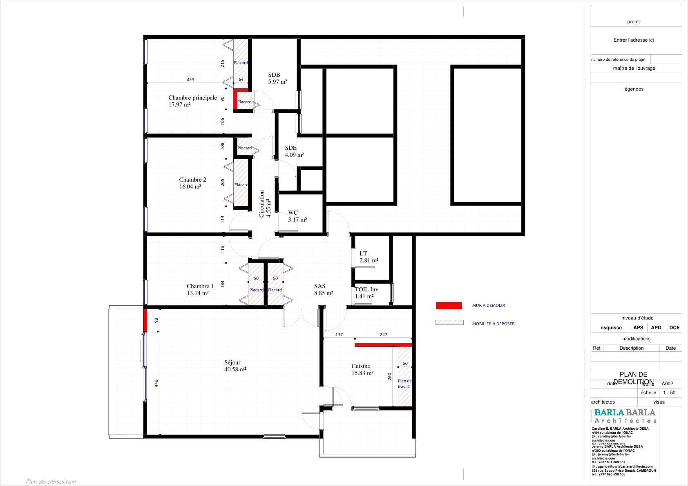
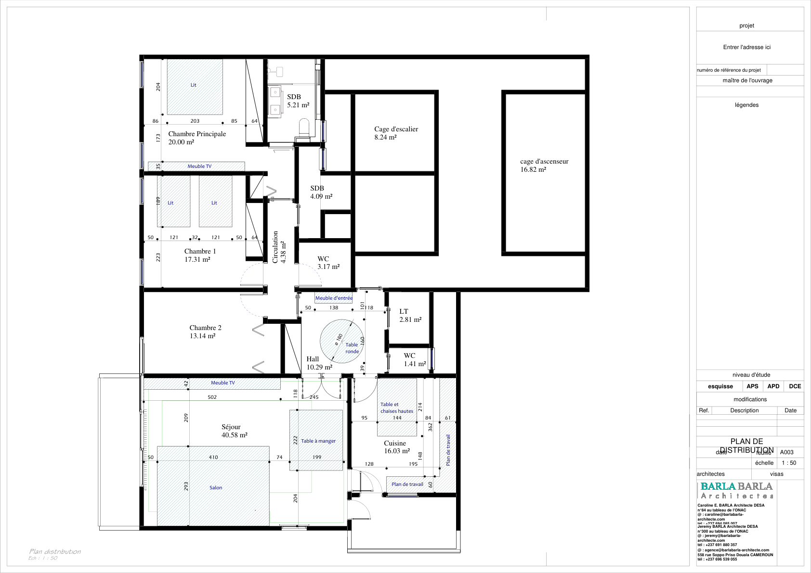
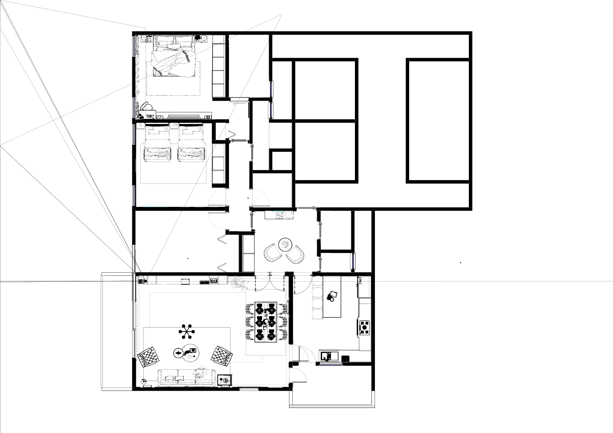
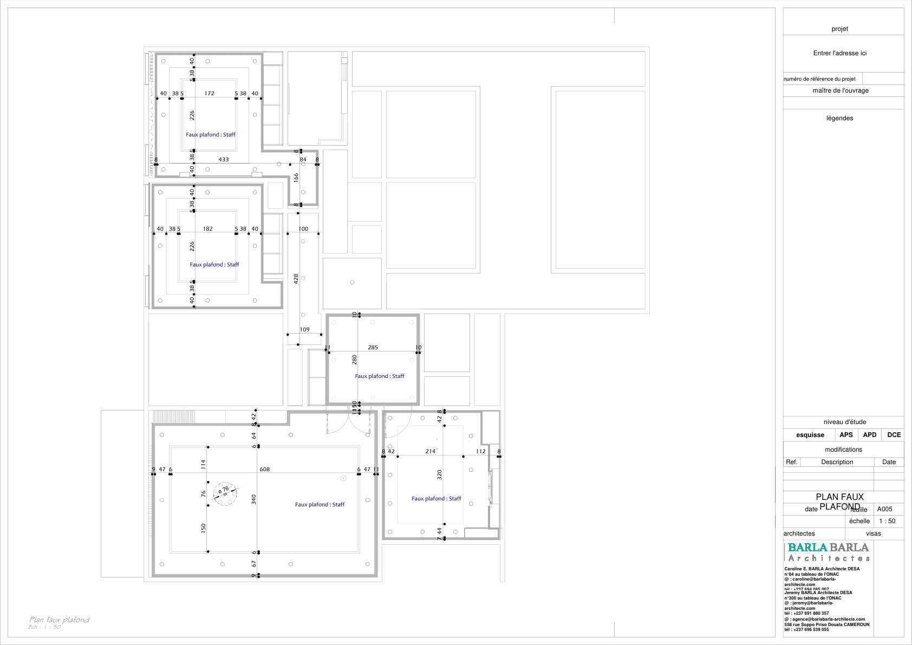

Densification Urbaine & Qualité de Vie
La Résidence Bahemeck est un projet d'immeuble résidentiel collectif conçu pour répondre à la demande croissante de logements de standing en zone urbaine. Le défi principal était d'optimiser l'occupation du sol tout en offrant des espaces de vie généreux et bien ventilés.
L'architecture s'appuie sur une structure poteaux-poutres permettant une grande flexibilité dans l'aménagement intérieur des appartements. Les façades sont rythmées par des loggias profondes qui servent de zones de transition thermique et offrent des espaces extérieurs privés à chaque unité.
Le projet intègre une gestion rigoureuse des circulations communes et des services (parking, sécurité, stockage). La sobriété des lignes et le choix de teintes neutres assurent une intégration harmonieuse dans le tissu urbain existant, tout en affirmant une identité contemporaine forte.



